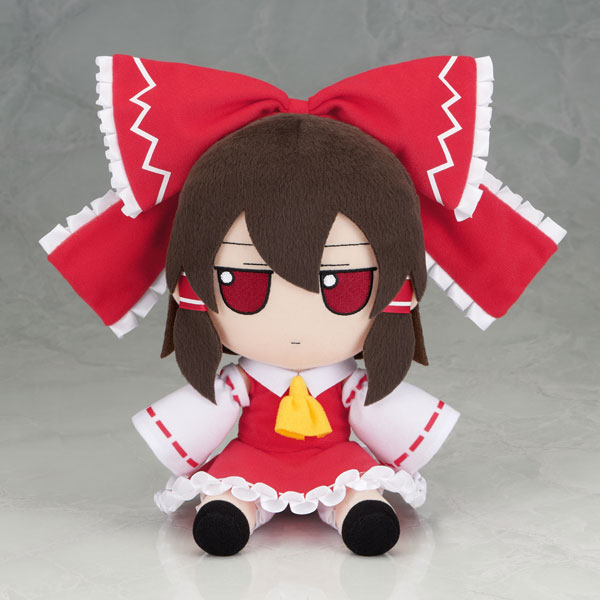
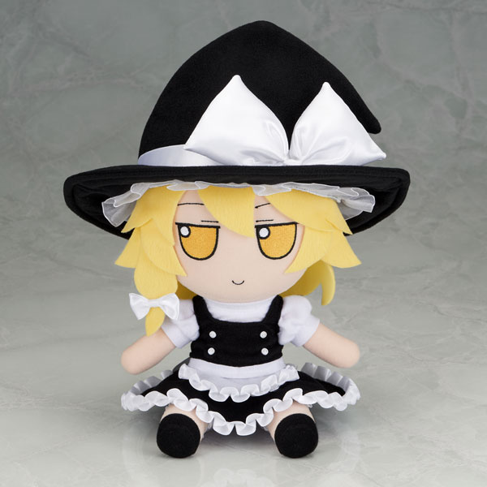

The Beginning
I was browsing Twitter (or "X" if you prefer bad cars, slow internet and manchild + midlife crisis middle-aged billionaire), I saw an account that constantly posts Touhou memes and shitposts in Spanish called @TouhouSpain.
I thought it was fun and stuff like you've guessed it, Spanish, The language that was memed.
One day, I saw a tweet from @TouhouSpain and I got an idea.
What if... I created a Twitter account that was literally same as TouhouSpain but in Malaysia and it speaks both Malay and English??
Well, guess what. I created one!
It's here.
